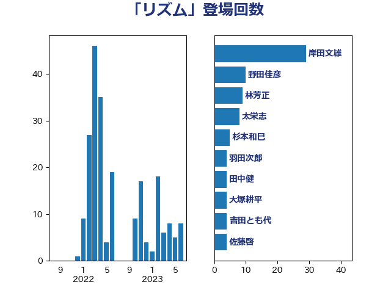

単語「リズム」

| 岸田文雄 | 自由民主党 | 29 回 |
| 野田佳彦 | 立憲民主党 | 10 回 |
| 林芳正 | 自由民主党 | 9 回 |
| 太栄志 | 立憲民主党 | 8 回 |
| 杉本和巳 | 日本維新の会 | 5 回 |
| 羽田次郎 | 立憲民主党 | 4 回 |
| 田中健 | 国民民主党 | 4 回 |
| 大塚耕平 | 国民民主党 | 4 回 |
| 吉田とも代 | 日本維新の会 | 4 回 |
| 佐藤啓 | 自由民主党 | 4 回 |
| 井上哲士 | 日本共産党 | 4 回 |
| 末松信介 | 自由民主党 | 3 回 |
| 岩屋毅 | 自由民主党 | 3 回 |
| 鈴木庸介 | 立憲民主党 | 2 回 |
| 道下大樹 | 立憲民主党 | 2 回 |
| 窪田哲也 | 公明党 | 2 回 |
| 福島伸享 | 無所属 | 2 回 |
| 矢倉克夫 | 公明党 | 2 回 |
| 松山政司 | 自由民主党 | 2 回 |
| 本田顕子 | 自由民主党 | 2 回 |
| 広瀬めぐみ | 自由民主党 | 2 回 |
| 小林鷹之 | 自由民主党 | 2 回 |
| 宮澤博行 | 自由民主党 | 2 回 |
| 上川陽子 | 自由民主党 | 2 回 |
| 鰐淵洋子 | 公明党 | 1 回 |
| 高橋はるみ | 自由民主党 | 1 回 |
| 音喜多駿 | 日本維新の会 | 1 回 |
| 野村哲郎 | 自由民主党 | 1 回 |
| 萩生田光一 | 自由民主党 | 1 回 |
| 細田健一 | 自由民主党 | 1 回 |
| 空本誠喜 | 日本維新の会 | 1 回 |
| 神谷宗幣 | 参政党 | 1 回 |
| 石川昭政 | 自由民主党 | 1 回 |
| 石垣のりこ | 立憲民主党 | 1 回 |
| 田村智子 | 日本共産党 | 1 回 |
| 牧義夫 | 立憲民主党 | 1 回 |
| 滝波宏文 | 自由民主党 | 1 回 |
| 浜田聡 | NHK党 | 1 回 |
| 河西宏一 | 公明党 | 1 回 |
| 池畑浩太朗 | 日本維新の会 | 1 回 |
| 永岡桂子 | 自由民主党 | 1 回 |
| 水岡俊一 | 立憲民主党 | 1 回 |
| 櫻井周 | 立憲民主党 | 1 回 |
| 櫛渕万里 | れいわ新選組 | 1 回 |
| 榛葉賀津也 | 国民民主党 | 1 回 |
| 森山浩行 | 立憲民主党 | 1 回 |
| 松野博一 | 自由民主党 | 1 回 |
| 杉尾秀哉 | 立憲民主党 | 1 回 |
| 早坂敦 | 日本維新の会 | 1 回 |
| 岩谷良平 | 日本維新の会 | 1 回 |
| 山添拓 | 日本共産党 | 1 回 |
| 小宮山泰子 | 立憲民主党 | 1 回 |
| 天畠大輔 | れいわ新選組 | 1 回 |
| 塩田博昭 | 公明党 | 1 回 |
| 古川禎久 | 自由民主党 | 1 回 |
| 加藤勝信 | 自由民主党 | 1 回 |
| 加田裕之 | 自由民主党 | 1 回 |
| 伊藤岳 | 日本共産党 | 1 回 |
| 伊藤孝恵 | 国民民主党 | 1 回 |
| 井上信治 | 自由民主党 | 1 回 |
| 中谷真一 | 自由民主党 | 1 回 |
| 中川宏昌 | 公明党 | 1 回 |
| 中島克仁 | 立憲民主党 | 1 回 |
| 一谷勇一郎 | 日本維新の会 | 1 回 |